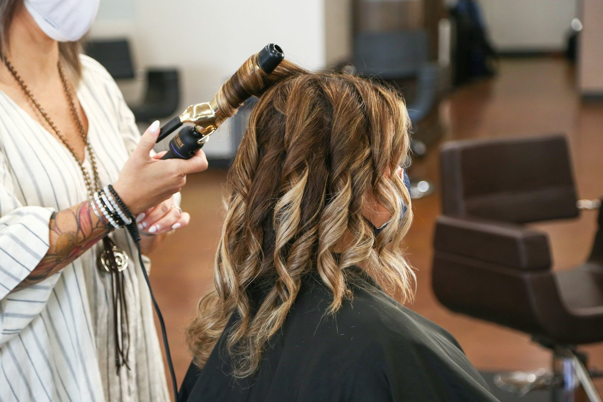
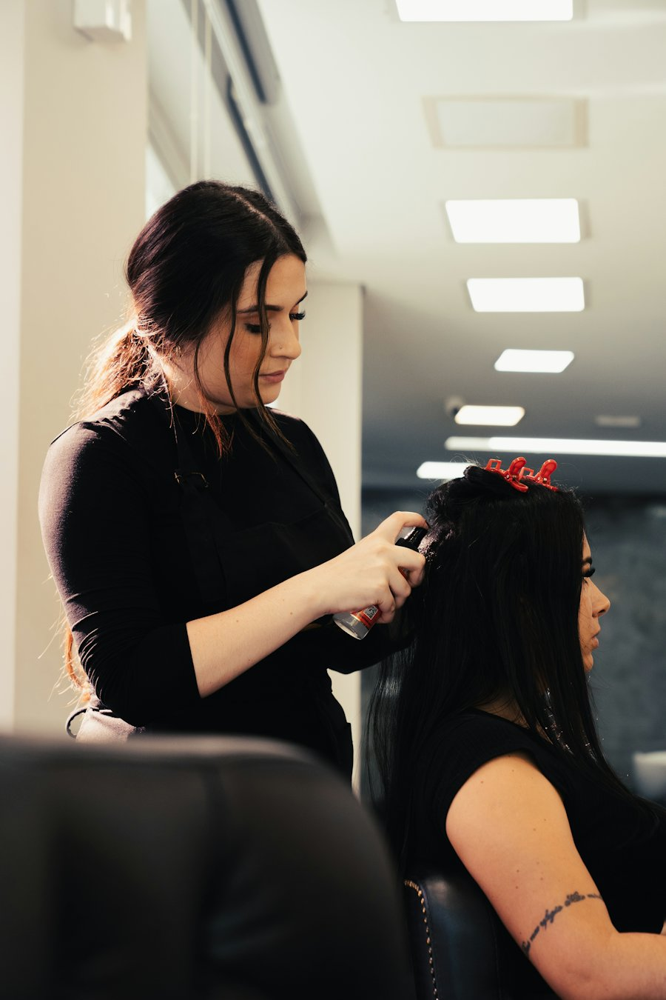

Salon de coiffure, Quimperlé
Couleur, coupe, et le jour J.
Rue de Pont-Aven, une équipe qui coiffe Quimperlé depuis des années : coupes, balayages, coiffures de mariée.
Prestations
Ce que l'on fait au salon
Shampooing, coupe, brushing
La coupe adaptée à vos cheveux, et un brushing pour repartir coiffé.
Colorations et balayages
Couleur, reflets cuivrés, balayages lumineux sur carré ou cheveux longs.
Chignons et mariées
Coiffures de mariée et de cérémonie, chignons, essai sur rendez-vous.
Lissages et extensions
Pour discipliner les cheveux ou gagner en longueur et en volume.
Tarifs communiqués au salon et par téléphone.
L'équipe
Une équipe de cinq, un même salon
L'équipe continue rue de Pont-Aven avec la même énergie, et souhaite une belle retraite à Nadine après toutes ces années au salon.
Bonne retraite Nadine.

Rendez-vous
Horaires
- Lun
- Mar
- Mer
- Jeu
- Ven
- Sam
- Dim
Du mardi au samedi, sur rendez-vous. Appelez le salon pour connaître les créneaux disponibles.
02 98 09 07 36Adresse
Le salon
87 rue de Pont-Aven29300 Quimperlé